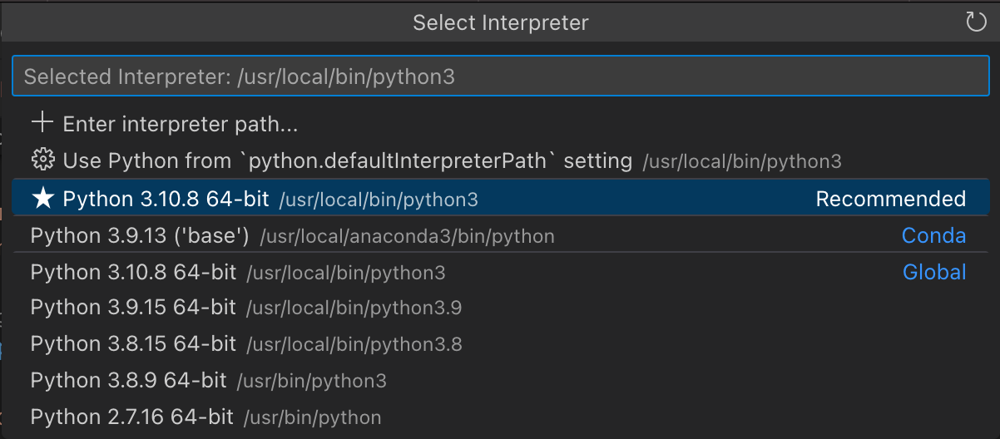

vscode运行python3
vscode 中运行调试 python3 简介。
- Tutorial - Getting Started with Python in VS Code
- Environments - Using Python environments in VS Code
vscode + python#
微软官方提供了 Python 插件（内嵌 Jupyter 插件）：
-
Python: IntelliSense (Pylance), Linting, Debugging (multi-threaded, remote), Jupyter Notebooks, code formatting, refactoring, unit tests, and more.- Extension Pack:
Pylance,Jupyterandisort.
- Extension Pack:
-
Jupyter: Jupyter notebook support, interactive programming and computing that supports Intellisense, debugging and more.- Extension Pack:
Jupyter Keymap,Jupyter Notebook Renderers,Jupyter Slide Show,Jupyter Cell Tags.
- Extension Pack:
vscode上配置python的运行环境
那些使用VSCode写Python踩过的坑(Anaconda配置)
interpreter#

Recommended为 vscode settings 中配置的 defaultInterpreterPath。- 当在 vscode settings 中配置了 CondaPath，会在此处出现
Conda子环境的解释器版本。 Global为 homebrew 安装（/usr/local/bin/python3）和 macOS 自带的（usr/bin/python3）。
Global 下可能出现 brew 安装的多个版本供选择。
run debug#
vscode 打开普通 Python File（例如code.py），可以有以下运行方式：
-
⇧⌘P调起 Command Palette，输入Run，可执行 Run Code 或 Python: Run Python File in Terminal。- 如果py脚本开头没有指定 Shebang -
#!/usr/bin/env python3，则执行/usr/bin/env python3 code.py；否则，将执行python -u code.py。
- 如果py脚本开头没有指定 Shebang -
-
可在右上角 ▶︎ 按钮下拉选择运行方式：Run Python File, Run Python File in Dedicated Terminal 将采用 Python: Select Interpreter 中选定的python版本执行脚本。
- 例如：
/usr/local/bin/python3.9 code.py
- 例如：
在 vscode 中打开 Python 脚本文件(test.py)，在文本编辑区左侧 gutter 上点击下断点。
调试（Debug）也可从多个入口发起：
⇧⌘P调起 Command Palette，输入Debug，选择 Debug: Start Debugging 选择 Python Debugger。- 可在右上角 ▶︎ 按钮下拉选择
Python Debugger: Debug Python File启动调试。 - 在左侧浏览器面板中点击 Run and Debug，也起发起调试。
启动调试运行起来后，命中断点中断，右侧会有一个悬浮的调试工具条，支持 Continue、Step Over/Into/Out。
同时，左侧侧边拉会打开 Run and Debug，其中可以查看 Variables（Locals, Globals）、Watch 和 CallStack。
参考：
- Quick Start - UI tour。
- Quick Start - Run, debug, and test
vscode + conda#
Anaconda 配合 VSCode 可以搭建一个适用于机器学习、AI、数据科学领域学习与开发的 Python 开发环境。
condaPath#
// Path to the conda executable to use for activation (version 4.4+).
"python.condaPath": "/usr/local/anaconda3/condabin/conda",
Remove python.condaPath from workspace scope #17819
python.condaPath not considered when calling conda #9154
配置了 python.condaPath 之后，运行命令 Python: Select Interpreter 下拉列表中将会显示 conda base 环境的 python。
pythonPath#
Activating Anaconda Environment in VsCode
快捷键 cmd+, 打开 vscode 偏好设置，编辑修改（~/Library/Application Support/Code/User/settings.json），找到如下两个参数：
- python.pythonPath（现已变更为
defaultInterpreterPath）； - python.autoComplete.extraPaths；
修改为 conda 子环境下对应的 bin/python 和 side-packages：
# 设置 base 环境
"python.defaultInterpreterPath": "/usr/local/anaconda3/bin/python3",
"python.autoComplete.extraPaths": ["/usr/local/anaconda3/lib/python3.9/site-packages"],
# 设置 Py376 环境
"python.defaultInterpreterPath": "/usr/local/anaconda3/envs/Py376/bin/python3",
"python.autoComplete.extraPaths": ["/usr/local/anaconda3/envs/Py376/lib/python3.7/site-packages"],
refs#
搭建 Python 轻量级编写环境（Anaconda+VSCode）
Working with Anaconda in Visual Studio Code
Anaconda+VSCode搭建python环境 - Windows
Anaconda＋VSCode搭建python开发环境 - Windows
windows10环境下用anaconda和VScode配置
MacOS下如何配置Vscode+Anaconda呢？
mac vscode配置 anaconda 虚拟环境
Mac+Anaconda+PyCharm+VSCode环境搭建